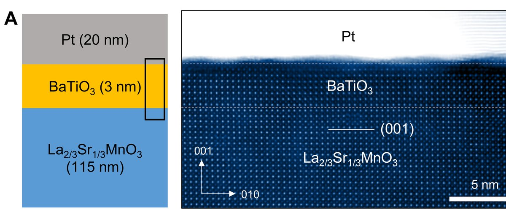
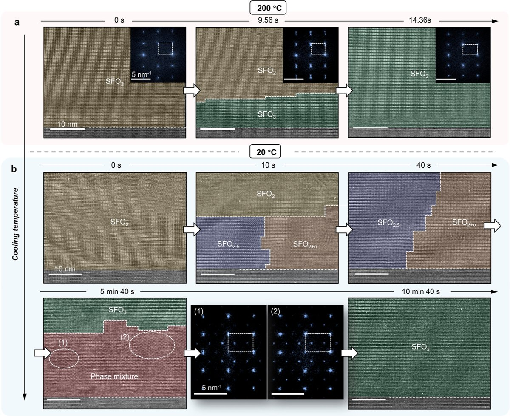
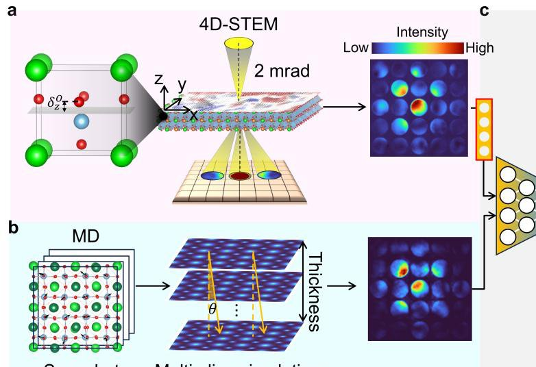

Research
Deep learning, atomistic simulation, and atomic-resolution electron microscopy of functional oxides.
Research Interest
Methods: deep learning for microscopy, ab initio multislice image simulation, ab initio / machine-learning-force-field molecular dynamics, phonon properties, DFT
Materials systems: oxide surfaces and interfaces, perovskites, 2D materials

Pt/BaTiO₃/La₂ₖ₃Sr₁ₖ₃MnO₃ ferroelectric tunnel junction: device structure and atomic-resolution HAADF-STEM image. Adapted from Jeong, Byun et al., Science Advances (accepted).
Defect-Engineered Ferroelectric & Multiferroic Tunnel Junctions
First-principles and machine-learning force-field calculations of oxygen-vacancy and antisite-defect effects on polarization switching, tunneling electroresistance, and selector-free nonlinearity in HfO2-, BaTiO3-, and Ca-doped BiFeO3-based tunnel junctions, combined with atomic-resolution STEM/EELS to directly image the interfacial defect structures that pin polarization and set device behavior.
See Wang, Byun et al., Adv. Mater. 2023 and Lee, Byun et al., Appl. Mater. Today 2022 (figure: Jeong, Byun et al., Science Advances, accepted).
View related publications
In-situ HRTEM time series of the SrFeO₃↔SrFeO₂ topotactic transformation, resolving vacancy-ordered intermediate phases (SrFeO₂.₅, SrFeO₂⁺σ, SrFeO₂.₄₃) during reduction/oxidation. Xing, Byun et al., J. Am. Chem. Soc. (2026).
Atomic-Scale Phase Transitions & Vacancy Ordering in Transition-Metal Oxides
In-situ (S)TEM combined with DFT and molecular dynamics to resolve oxygen-mediated topotactic phase transitions and previously unreported vacancy-ordered intermediates in perovskite–infinite-layer transformations (e.g., SrFeO3−x), and interfacial charge/polarization reconstruction at oxide heterointerfaces such as LaAlO3/SrTiO3 and polar ZnO surfaces.
See Xing, Byun et al., JACS 2026 and Wang, Byun et al., Nat. Commun. 2022.
View related publications
4D-STEM data acquisition and molecular-dynamics/multislice-simulation training pipeline for the deep-learning polarization-mapping model. Byun, Lee et al., arXiv:2506.06598 (2025).
Deep Learning for Electron Microscopy
Deep-learning models for reconstructing 3D polarization fields directly from 4D-STEM diffraction data, aimed at extending atomic-resolution polarization and strain mapping beyond what conventional image-based analysis can resolve.
See Byun, Lee et al., arXiv:2506.06598 (2025).
View related publicationsTechnical Skills
DFT/MD codes: VASP, Quantum Espresso, CP2K, Wannier90, Phonopy, GULP
ML: PyTorch · Programming: Python, C++ (Arduino)
Scientific computing: Linux server management, queuing systems (SGE), Git